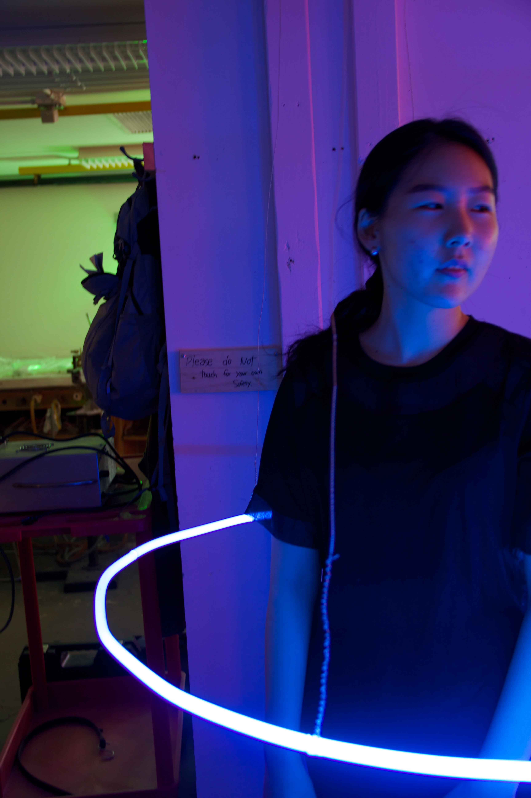

Personal space refers to an area with mental and emotional boundaries surrounding one’s body. Although such interpersonal distance is culturally and physically varied, everyone has the distance that one desires.
What is "Personal Space" really about? Where does such idea of boundary regulation mechanism come from, while the space is hardly one’s own? It- when it comes down to the bare essential- is an endless human attempts to gain control and protection.
Boundary aims to explore how we renegotiate our stands on ownership, possession and protection by increasing the physical interaction between one’s body and the object. As the object becomes more physical, the mind focuses less on the abstract wants, desires of the individual, and more on means of survival.
